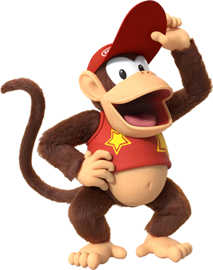

 Diddy Kong Racing: Reception
The game received critical acclaim upon release. The Nintendo 64 version holds an aggregate score of 89% at GameRankings based on 20 reviews[21] and 88 at Metacritic based on 15 reviews,[23] whereas the Nintendo DS remake received a score of 67% at GameRankings based on 42 reviews[22] and a score of 63 at Metacritic, based on 39 reviews.[24] Diddy Kong Racing sold approximately 4.5 million copies worldwide;[10] which included 3.78 million copies sold in the United States and PAL regions,[35] and 653,928 copies in Japan.[36] At the 1999 Milia festival in Cannes, it took home a "Gold" prize for revenues above €15 million in the European Union during the previous year.[37] It stands as the Nintendo 64's eighth best-selling game,[36] and broke one million units sold in the United States within three weeks of its release.[38][39]
The graphics and gameplay were the most praised aspects of the game. Some critics noted how it minimised pop-up without resorting to the use of distance fog.[27][40] Jeff Gerstmann of GameSpot disputed this, saying that the game has both pop-up and distance fog in amounts comparable to the average Nintendo 64 game. He nonetheless stated that the game was a "pleasure to look at" and praised the detail of the tracks.[7] Doug Perry of IGN heralded the visuals as the most "spectacular of its kind", and praised Rare's ability to master dynamic animation through enabling polygons to span larger surfaces without loss of framerate. Furthermore, Perry stated that the game's technical achievements were enough to leave "even the most critical Japanese gamer [to] look upon with smiling eyes".[29]

Although Crispin Boyer opened his review of the game for Electronic Gaming Monthly (EGM) with the warning "Don't dismiss this out-of-the-blue racer as a Mario Kart 64 clone",[27] most reviews compared the two games. Gerstmann suspected Nintendo of rushing Diddy Kong Racing to market in order to fill a quarter left vacant by delays of other Nintendo games, and argued it was much too soon after Mario Kart 64's debut to release such a similar game.[7] Other critics, including Boyer's EGM co-reviewers, focused on Diddy Kong Racing's perceived superiority to Mario Kart 64.[26][27][29][34] Dan Hsu of EGM said it "beats Mario Kart 64 in every department", particularly mentioning the superior balance and level designs.[27] Edge praised the adventure and progression aspect of the game, stating that the game's single-player mode is "everything Mario Kart 64 should have been."[26]
The character designs met with a variety of opinions. EGM's Shawn Smith praised the characters as "hilarious".[27] Next Generation, by contrast, said the character designs are "pathetic and obvious, molded from the same cookie cutter as Banjo-Kazooie and Conker", noting the formulaic use of anthropomorphic animal characters and the simplistic application of each animal's characteristics to gameplay.[34] Perry felt that the vocals of characters in the game were "heartwarming" and "comical", while also stating that "some of the characters are just too damn cute and are certain to annoy older gamers."[29]

Overall assessments of the game were mostly positive. GamePro gave it a 4.5 out of 5 for sound and a perfect 5.0 in control, graphics, and fun factor, calling it "a feverishly fun Nintendo 64 racer that combines elements of Mario Kart 64, Wave Race 64, and Pilotwings 64 into one spectacular game."[40] EGM named it "Game of the Month", with its four reviewers lauding the challenging gameplay and numerous objectives to tackle.[27] Gerstmann instead counted the latter as the game's greatest weakness, arguing that having to repeatedly play through the same courses with slightly different objectives makes the game excessively repetitive. He concluded that the game is far better than Mario Kart 64, but the repetitiveness "ultimately kills it."[7] Next Generation fell more in line with the majority, remarking that the combination of racing and adventure elements works well, and that "Diddy Kong Racing shows Rare's pure craftmanship, displaying keen subtleties that eventually win players over."[34]
In a retrospective review, Andrew Donaldson of Nintendo Life stated that the game was visually "incredibly vibrant" and "captivating" for a game of the early Nintendo 64 era.[32] Scott McCall of AllGame acknowledged its only shortcoming was its "excessive" amount of clipping, although he admitted it was not "unbearable". He praised the wide range of audio in the game, including its voice acting and soundtrack; he heralded the music as "interesting" and "fitting" to its race tracks, also considering it superior to that of Mario Kart 64.[25] Donaldson criticised game's presentation as too "cutesy", especially in terms of the characters' voices. However, he praised the "upbeat" and "catchy" soundtrack, saying that each track had its own unique tune to suit the distinct environment.[32] In 2009, Official Nintendo Magazine ranked the game 79th on a list of the greatest Nintendo games of all time.[41]
EGM named Diddy Kong Racing "Racing Game of the Year" at its 1997 Editors' Choice Awards.[42] Diddy Kong Racing was awarded with "Console Racing Game of the Year" by the Academy of Interactive Arts & Sciences in 1998, beating Mario Kart 64, Moto Racer and NASCAR 98.[43]